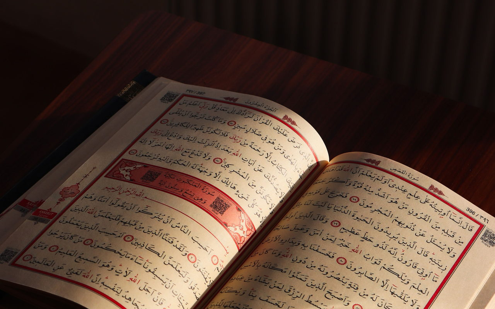

Kelas Ramadhan 1448 H · Pendaftaran dibuka 20 Januari 2027
Kelas Ramadhan: Luruskan Al-Fatihah, Terangi Ribuan Rakaat
Surat Al-Fatihah adalah rukun shalat yang wajib dibaca dengan benar di setiap rakaat. Di bulan suci diturunkannya Al-Qur'an ini, luangkan 8 hari untuk memperbaiki makhraj, sifat huruf, kaidah tajwid, dan mentadabburi maknanya secara talaqqi langsung bersama pengajar.
Yang perlu Anda ketahui tentang program Ramadhan ini
- Format Belajar8 Hari IntensifTerstruktur tuntas selama bulan Ramadhan.
- Fokus SilabusSurat Al-FatihahBedah makhraj, sifat, tasydid, tajwid & tadabbur.
- Biaya Program100% GratisKhidmat dakwah Ramadhan tanpa pungutan SPP.
- Pemisahan KelasIkhwan & AkhwatAsatidz untuk ikhwan, ustadzah untuk akhwat.
- Jadwal HalaqahPilih di FormulirMenyesuaikan slot pengajar (Subuh, Sore, Malam).
- Metode BimbinganTalaqqi & MusyafahahBacaan didengar dan dikoreksi langsung pengajar.

لَا صَلَاةَ لِمَنْ لَمْ يَقْرَأْ بِفَاتِحَةِ الْكِتَابِ
Untuk siapa saja yang merindukan shalat yang sah dan khusyuk
Shalat kita tegakkan setiap hari, namun kapan terakhir kali bacaan rukun Al-Fatihah kita disimak dan diverifikasi langsung oleh guru Al-Qur'an?
- 01Belum pernah disimak guru sejak kecilMengakhiri keraguan bertahun-tahun apakah bacaan Al-Fatihah yang kita baca di setiap rakaat shalat sudah sesuai kaidah Rasulullah ﷺ.
- 02Khawatir kesalahan fatal (Lahn Jali)Memastikan tidak ada harakat yang tertukar, tasydid yang hilang, atau makhraj huruf yang bergeser sehingga merusak arti doa agung Al-Fatihah.
- 03Mendambakan shalat & tarawih lebih khusyukMelafalkan huruf dengan tartil dan memahami faidah maknanya menghadirkan ketenangan jiwa (thuma'ninah) saat berdiri menghadap Allah.
Formulir pendaftaran hanya menampilkan jadwal halaqah yang sesuai dengan jenis kelamin Anda (Ikhwan dengan Asatidz, Akhwat dengan Ustadzah).
Silabus 8 hari intensif, tahsin lafal dan tadabbur ayat
Mengadopsi modul resmi 39 slide Halaqah Al-Fatihah Rattililqur'an. Setiap sesi membedah koreksi lafal, tadrīb musyafahah, faidah tadabbur, dan muraja'ah bertingkat.
- 01Hari 1 — Adab, Landasan Motivasi & Ta'awwudzLandasan QS Al-Qamar: 32 & QS An-Nahl: 98. Koreksi pelafalan Hamzah tipis, 'Uu monyong, Dzu ujung lidah, tafasysyī Syīn, dan sifat jahr Jīm. Faidah perlindungan setan saat mentadabburi kalamullah.
- 02Hari 2 — Basmalah & Rahasia Rasm tanpa AlifKasrah sempurna Bā'/Mīm/Hā', nabr pada Lām tipis, dan Rā' bayniyyah. Menyingkap rahasia Rasm Utsmani dibuangnya Alif pada Basmalah (doa yang cepat dijawab Allah) serta makna Bā'ul Isti'ānah. Ditutup Tadrīb gabungan Ta'awwudz + Basmalah.
- 03Hari 3 — Ayat 2: Hamdalah & 4 Cara BersyukurMembedah 6 kekeliruan fatal: pantulan Lām/Mīm, Ḥā' pedas (ح) tertukar Hā' (ه) / Khā' (خ), dhammah jadi O, kasrah imālah, dan Bā' jadi P. Faidah syukur (QS Ibrāhīm: 7) dan tugas muraja'ah akumulatif Ayat 1–2.
- 04Hari 4 — Ayat 3 & 4: Ar-Rahmān, Ar-Rahīm & Hari PembalasanMenjaga takrīr dan tebalnya Rā', mad ashli 2 harakat terukur pada Māliki, serta menjaga sifat Līn pada Wawu (يَوْمِ). Menghayati perbedaan rahmat luas Ar-Rahmān vs rahmat khusus Ar-Rahīm. Tugas muraja'ah Ayat 1–4.
- 05Hari 5 — Ayat 5: Titik Kritis Nabr Tasydid IyyākaKaidah vital nabr (penekanan tasydid) pada Yā' (إِيَّاكَ): jika tasydid lepas, makna tauhid berubah fatal! Menyempurnakan 'Ain sukun, dhammah Bā'/Dāl, dan desis Sīn pada Nasta'īn. Faidah mendahulukan ibadah sebelum memohon tolong (QS Al-Baqarah: 45).
- 06Hari 6 — Ayat 6: Pembeda Huruf Tebal & Doa HidayahMembedakan Hā' pangkal tenggorokan (اه) vs Ḥā' tengah tenggorokan (ح), hams agar tidak khafā', tebalnya Shād kasrah (صِرَاطَ) agar tidak jadi Sīn, dan sifat infijār pada Ṭhā' (ط). Menghayati doa paling bermanfaat: memohon 2 hidayah.
- 07Hari 7 — Ayat 7: Ghayn Digesek, Dhad Geraham & Mad LazimKehati-hatian Idzhar pada An'amta. Huruf Ghayn (غ) wajib digesek bukan dibenturkan (jangan seperti huruf G) dan dilarang memantul. Kupas tuntas Ḍhād (ض) dari tepi lidah geraham atas tanpa isymām bibir monyong. Mad Lazim 6 harakat. Faidah Tafsir Jalālain.
- 08Hari 8 — Ujian Akhir, Tasmi' Utuh & Raport EvaluasiPuncak halaqah: setiap murid memperdengarkan bacaan utuh Surat Al-Fatihah (Ta'awwudz hingga Aamiin) di hadapan pengajar. Verifikasi bebas Lahn Jali & Lahn Khafi, pembagian catatan evaluasi personal, dan rekomendasi program lanjutan.
Belajar secara talaqqi, interaktif dan disimak langsung
- Talaqqi Musyafahah 1-on-1Bukan webinar massal yang pasif. Di setiap sesi, setiap peserta membaca giliran per ayat dan langsung disimak serta dikoreksi oleh pengajar, sehingga kesalahan lafal tidak terulang tanpa disadari.
- Halaqah Kecil (8–12 Peserta)Kuota setiap kelompok dibatasi ketat agar alokasi waktu koreksi tiap individu mencukupi dan bimbingan berlangsung mendalam.
- Pengajar TerstandarSeluruh asatidz dan ustadzah telah melalui standardisasi Microteaching internal — sabar, membimbing dari dasar, dan mengutamakan kenyamanan belajar.
- Pemisahan Ikhwan & AkhwatHalaqah putra dibimbing pengajar ikhwan, halaqah putri dibimbing ustadzah. Tautan ruang daring terpisah penuh demi menjaga adab dan privasi.
- Grup WhatsApp PendampinganKoordinasi kelas, pembagian bagan ringkas tajwid Al-Fatihah, dan arahan tugas muraja'ah harian disampaikan melalui grup WhatsApp program.
Kata mereka yang telah dibimbing pengajar
Alhamdulillah pengajarnya baik dan penjelasannya enak sehingga kita paham. Mengoreksi jika ada kurang dalam pengucapan makhraj & sifat hurufnya secara detail.
MasyaAllah, ustadzahnya telaten dan sabar banget menjelaskan materi dan membenahi makhraj, jadi sangat mudah untuk dipahami dan dipraktikkan. Barakallahu fiikunna.
MasyaAllah, kalau soal program dari Rattil jujur selalu memuaskan — ustadzahnya telaten, sabar, pengertian membimbing yang terbata-bata. Bersyukur sekali bisa jadi thalibah di Rattilil Qur'an.
Intensif 8 hari, pada slot waktu yang Anda pilih
Program dilaksanakan selama 8 hari pertemuan. Pilihan jam halaqah tertera langsung di formulir pendaftaran menyesuaikan jadwal ketersediaan para pengajar.
- 01Pilihan Waktu Khas RamadhanTersedia beragam pilihan slot waktu yang ramah ritme puasa: Slot Pagi (Ba'da Subuh: 05.30–06.45 WIB), Slot Sore (Jelang Berbuka: 16.00–17.15 WIB), dan Slot Malam (Ba'da Tarawih: 20.30–21.45 WIB).
- 02Pilih Jadwal yang Pasti Bisa Anda Hadiri PenuhKarena kelas berlangsung intensif 8 pertemuan, kehadiran di setiap sesi sangat menentukan kesinambungan materi dari Ta'awwudz hingga ayat terakhir.
- 03Jadwal Penuh? Masuk Daftar Tunggu OtomatisBila slot yang Anda inginkan sudah terisi penuh oleh peserta lain, Anda tetap bisa mendaftar dan masuk daftar tunggu. Jika ada pembatalan kursi, sistem menaikkan antrean secara otomatis.
100% Gratis, investasi Anda adalah waktu dan kesungguhan
Biaya Belajar
100% Gratis · Khidmat Ramadhan
Investasi Anda: Komitmen Kehadiran 8 Hari.
Program khidmat dakwah dan wakaf ilmu Ramadhan Rattililqur'an — bebas biaya SPP dan bebas biaya pendaftaran.
- Amanah Kuota Terbatas: Kuota halaqah sangat dibatasi (8–12 orang). Jangan mendaftar bila tidak berniat hadir penuh 8 hari, agar tidak mengambil hak saudara lain yang mengantre.
- Tanpa Biaya Tersembunyi: Tidak ada biaya pendaftaran, biaya lembar evaluasi, maupun infak wajib di akhir kelas.
- Syiar Amal Jariyah: Sebagai wujud timbal balik kebaikan, cukup bantu bagikan poster/informasi program ini ke status WhatsApp atau kerabat terdekat.
Ada pertanyaan seputar program Ramadhan ini? Hubungi admin via WhatsApp untuk informasi selengkapnya.
Yang kami harapkan dari setiap peserta
- 01Niat Ikhlas Memperbaiki Rukun ShalatBerniat sungguh-sungguh karena Allah Ta'ala untuk membenahi bacaan Al-Fatihah agar shalat fardhu harian sah dan bernilai di sisi-Nya.
- 02Bertekad Hadir Penuh Selama 8 HariMengikuti seluruh 8 pertemuan halaqah tanpa absen, hadir tepat waktu, dan mengerjakan tugas muraja'ah harian di rumah.
- 03Menyiapkan Perangkat & Koneksi yang LayakMenggunakan ponsel atau laptop dengan mikrofon yang jernih dan koneksi internet stabil agar proses talaqqi dan penyimakan makhraj berjalan lancar.
- 04Menjaga Adab Majelis Ilmu Al-Qur'anMenghormati pengajar dan sesama thalibah/thalib, menyimak dengan khidmat saat teman sehalaqah sedang membaca, dan mematuhi tata tertib kelas.
Penting diperhatikan: Mengingat kuota terbatas dan tingginya animo pendaftar di bulan Ramadhan, peserta yang mendaftar tetapi tidak hadir tanpa kabar akan kehilangan prioritas pada program-program Rattililqur'an berikutnya.
Lima langkah menuju halaqah perdana
- 1Isi formulir pendaftaranBuka halaman pendaftaran dan pilih program Kelas Ramadhan. Isi data diri, pilih halaqah sesuai jenis kelamin, dan pilih jadwal yang cocok.
- 2Bagikan syiar informasiBagikan poster informasi kelas ini ke status WhatsApp atau media sosial Anda sebagai bentuk syiar amal jariyah.
- 3Cek status pendaftaranPantau status penerimaan Anda kapan saja dengan nomor pendaftaran dan tanggal lahir di halaman Cek Status.
- 4Masuk grup WhatsApp kelasSetelah terkonfirmasi, Anda akan diarahkan masuk ke grup WhatsApp halaqah untuk menerima tautan ruang kelas daring (Google Meet / Zoom).
- 5Mulai talaqqi 8 hariHadir tepat waktu di sesi perdana (Hari 1) dan ikuti rangkaian talaqqi intensif Al-Fatihah hingga tuntas hari ke-8.
Program terdekat: Kelas Ramadhan 1448 H, pendaftaran dibuka 20 Januari 2027.
Apakah program Kelas Ramadhan ini benar-benar 100% gratis?
Ya, benar-benar 100% gratis. Program ini adalah program khidmat dakwah dan wakaf ilmu Ramadhan dari Rattililqur'an. Tidak ada biaya pendaftaran, SPP, maupun biaya evaluasi akhir. Rincian komitmen
Saya belum lancar membaca Al-Qur'an dan sering keliru. Boleh ikut?
Sangat boleh. Kelas ini dimulai dari dasar makhraj huruf ta'awwudz dan basmalah. Pengajar membimbing huruf demi huruf dengan sangat sabar dan telaten tanpa ada rasa dihakimi.
Apakah halaqah ikhwan (laki-laki) dan akhwat (perempuan) dipisah?
Ya, dipisah secara ketat. Halaqah ikhwan dibimbing oleh pengajar ikhwan, dan halaqah akhwat dibimbing oleh ustadzah. Tautan ruang daring (Google Meet / Zoom) juga terpisah penuh demi menjaga adab dan kenyamanan.
Kapan jam halaqahnya dan bagaimana cara memilihnya?
Pilihan hari dan jam halaqah tercantum langsung di formulir pendaftaran saat Anda mendaftar. Tersedia beragam slot waktu khas Ramadhan (pagi ba'da Subuh, sore jelang berbuka, atau malam ba'da Tarawih) sesuai jadwal pengajar.
Apakah peserta wajib menyalakan kamera (on-cam)?
Sangat dianjurkan agar pengajar dapat melihat gerak bibir dan artikulasi makhraj huruf Anda secara akurat. Khusus untuk halaqah akhwat, privasi terjamin aman karena seluruh peserta dan pengajarnya adalah wanita.
Bagaimana jika di salah satu hari saya berhalangan hadir?
Karena kelas ini hanya berlangsung 8 pertemuan intensif dan kuotanya terbatas, peserta sangat diharapkan hadir penuh. Jika terdapat uzur syar'i mendesak, segera koordinasikan dengan pengajar di grup halaqah.
Apakah ada evaluasi atau raport bacaan di akhir program?
Ya. Di hari ke-8, setiap murid yang menuntaskan program akan menjalani sesi tasmi' komprehensif dan menerima catatan evaluasi personal mengenai status pelafalan makhraj dan tajwid Al-Fatihahnya.
Setelah selesai 8 hari, apakah bisa melanjutkan belajar tahsin reguler?
Tentu saja. Alumni Kelas Ramadhan mendapatkan prioritas untuk melanjutkan ke Kelas Tahsin Riyadhatulhuruf Level 1 reguler untuk mempelajari seluruh huruf hijaiyah dan kaidah tajwid Al-Qur'an secara mendalam.
Siap membenahi bacaan shalat di bulan suci?
Delapan hari yang Anda curahkan untuk Al-Fatihah akan menerangi ribuan rakaat shalat Anda di masa depan. Biidznillah